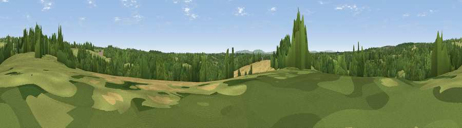

Viewpoint near Rushlake Green
#29024 in England · top 34% of its area beats it · near Rushlake Green · path 70 mWhere it is
The exact computed spot (TQ 61175 18925). Click the marker for map links.
Public access: the nearest public right of way is about 70 m away — the final stretch may cross private land. Computed from Natural England's CRoW access layer and OpenStreetMap rights of way — not the legal definitive map. Always verify locally.
The view, rendered

A 360° render of this exact spot computed from the terrain model, tree cover and land cover — summer colours, afternoon light, calibrated against photographs of famous viewpoints. Real trees, hedges and buildings will differ in detail.
The panorama
Grey silhouette: terrain skyline in each direction (720 bearings, Earth curvature and refraction included). Dashed green: skyline with trees (+15 m) and buildings (+8 m) as obstacles. Blue strip: how far the ground is visible on each bearing.
Where the view opens
Wedge length = distance to the farthest visible ground on that bearing (vegetation-aware). Rings at 10, 25 and 50 km.
What fills the view
48% grassland · 40% woodland · 10% cropland ·
Angular shares of the visible panorama (visual magnitude), not map area. Landscape diversity 0.44 (0–1 Shannon).
Key numbers
More beautiful places nearby
The staircase of upgrades: each row has a higher view potential than everything closer. Driving times are estimates from straight-line distance, calibrated against real road routing — check an actual route before setting out.
| Place | Direction | Drive | Score |
|---|---|---|---|
| Viewpoint near Rushlake Green | E · 2 km | ~4 min | 43.6 |
| Viewpoint near Cade Street | N · 2 km | ~5 min | 56.7 |
| Viewpoint near Rushlake Green | E · 3 km | ~6 min | 57.4 |
| Viewpoint near Dallington | E · 6 km | ~12 min | 67.2 |
| Viewpoint near Brightling | ENE · 6 km | ~13 min | 68.0 |
| Brightling Obelisk [Brightling Down] | ENE · 6 km | ~13 min | 69.1 |
| Viewpoint near Wilmington | SSW · 17 km | ~29 min | 81.8 |
| Wilmington Hill | SSW · 17 km | ~30 min | 85.4 |
50.94723, 0.29302 · source: screening · position refined by local search. Computed location — check access rights before visiting.